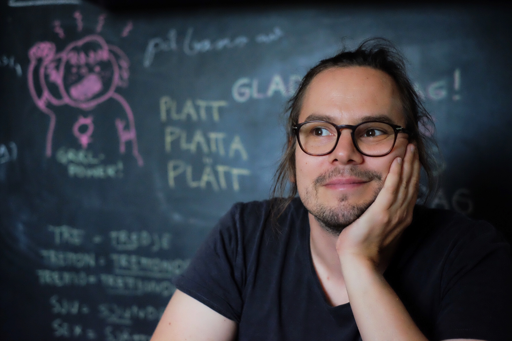
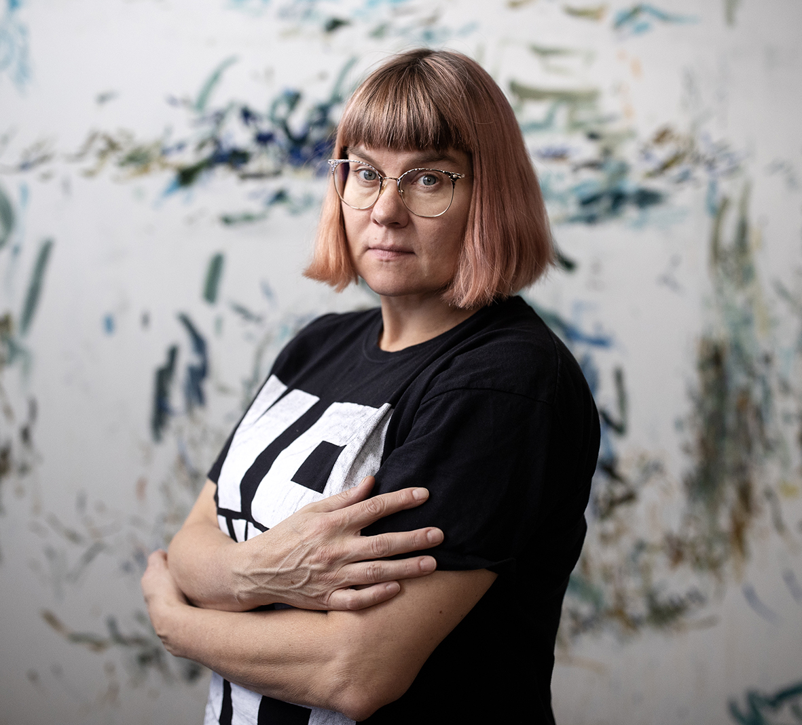

Tomi Slotte Dufva
Assistant Professor
Aalto University
School of Arts, Design and Architecture
Art and Design Teacher Education
and Pedagogy.
AADTE brings together expertise in art and design pedagogy across the Cumulus network. We explore how teaching and learning can develop through collaboration, with a particular focus on teacher education and pedagogical study modules.
By exchanging experiences and approaches, we create connections between educators and partner schools — and develop new possibilities for art and design education together.
AADTE aims to meet and organise workshops in connection with the Cumulus World and European conferences. The group’s coordinators facilitate, plan and support the process, while all working group members are warmly invited to contribute by taking turns in leading the workshops.

Assistant Professor
Aalto University
School of Arts, Design and Architecture

University Lecturer
Aalto University
School of Arts, Design and Architecture
University Teacher
Aalto University
School of Arts, Design and Architecture
Portraits: Aalto University.
Participants listed in the Cumulus working group directory ↗.
Workshops, shared questions and conversations from our event archive.
Art universities as active contributors or neutral ground?
A shared resource for teaching. Artistic collaboration across distance.
Sharing everyday teaching experiences and the competencies they develop.
Past gatherings, documented on the Cumulus working group page. Explore each entry for context and the original announcement.
Have a question, a teaching experience to share or an idea for working together? We’d love to hear from you.
Let’s start a conversation